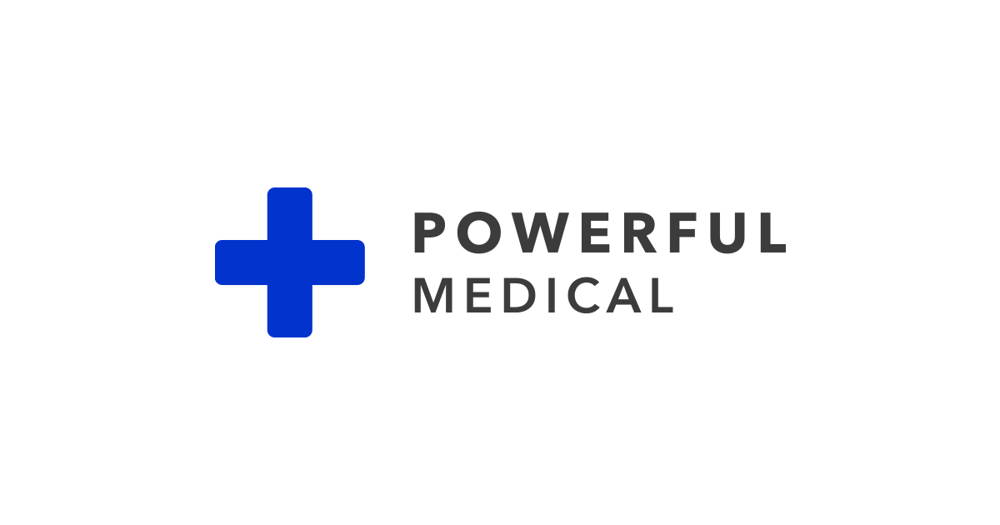

+++
title = "Powerful Medical - Office & Community Manager"
slug = "74"
+++

<div class="container mb-5">
    <div class="row justify-content-around">
        <div class="col-6 col-md-2 mt-3">
        </div>
        <div class="col-md-8">
            <h1>Powerful Medical</h1>
          <h2>Office & Community Manager</h2>
</h2>
            <p>
                <strong>Miesto: </strong>CBC1, Karadžičová 8, Bratislava
<br/>
                <strong>Forma: </strong>TPP (celý úväzok)<br/>
                <strong>Flexi faktor: </strong> Pracovnú dobu vieme na začiatku spolupráce nastaviť potrebe kandidáta/tky. Preferujeme plný 
              pracovný úväzok (8h/denne), v prípade kvalitného kandidáta/tky vieme úväzok prispôsobiť od 6hod/denne. 
                                                <br/>
                <strong>Plat: </strong>1,100-2,200 EUR brutto (v závislosti od skúsenosti) + podiel vo firme
<br/>
                <strong>Očakávaný nástup: </strong>Dohodou, ideálne asap<br/>
                <strong>Dátum pridania ponuky: </strong>27.4.2023<br/>
            </p>
            <h2>O firme </h2>
            <p>V Powerful Medical vytvárame produkty, ktoré pomáhajú zachraňovať ľudské životy. 
              Naša certifikovaná technológia diagnostikuje kardiovaskulárne ochorenia, ktoré sú 
              celosvetovo najčastejšou príčinou úmrtí, pomocou umelej inteligencie a strojového učenia. 
              Podporujú nás európske a izraelské 
              VC fondy a spolupracujeme s poprednými poskytovateľmi zdravotnej starostlivosti v EÚ 
              a Spojených štátoch.
      </p>
      <p>Vytvárame firmu, v ktorej môžu výnimočné talenty vykonávať najlepšiu prácu svojho života.<br>

<a href="https://www.powerfulmedical.com/"target="_blank">www.powerfulmedical.sk</a>

      </p>
            

            <h2>Náplň práce</h2>
      <p>Your role will be to provide an excellent experience for our people in Powerful Medical and enable them to do their 
        best work. Create an amazing workplace environment based in our growing Bratislava Headquarters.</p>
      <p>Your role: 
         <ul>Take care of our Bratislava Headquarters office to create a welcoming and collaborative environment
         <li>Provide an exceptional workplace experience to our Powerful Medical staff and visitors
         <li>Manage all related office vendors to ensure high levels of service
         <li>Help to plan and organize internal events ranging from Allhands meetings, Office breakfasts, Christmas parties to Company offsites
         <li>Help to create an amazing workplace experience also for our remote colleagues spread across the whole world
         <li>Manage company flight and accommodation bookings
         <li>Proactively look for improvements to optimize the whole workplace experience
  
      </ul>
      </p>
      
      <h2>Požiadavky</h2>
     <p> Your profile:<br>
      </p>
      <ul><li>You are a people person with a great passion for helping others
          <li>Willing to roll up your sleeves and focus on fast execution
          <li>A highly proactive approach to identifying improvements that can be made
            <li>Organised to stay on top of your tasks with a combination of great problem-solving skills
              <li>Flexible attitude and willingness to “get your hands dirty” to make others more productive
                <li>Fluent in both English and Slovak
                  <li>Driving license is a plus
                               </ul>
      
                           
            <h2>Ďalší postup</h2>
  <ul>
    <li>1. Poslať CV cez <a href="https://www.powerfulmedical.com/office-manager"target="_blank">www.powerfulmedical.sk/office-manager</a> 
      <li>2. Telefónny rozhovor
        <li>3. Case study
          <li>4. Osobné stretnutie
            <li>5. Rozhovor so CEO
  </ul>

        </div>
        <div class="col-md-2"></div>
    </div>
    <div class="row">
        <div class="col offset-md-2 mt-5">{{< back >}}</div>
    </div>
</div>
